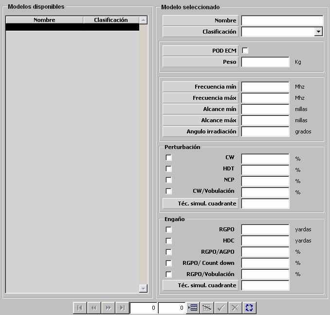

ECM

Descripción de los parámetros:
POD ECM: Este parámetro determina si el equipo ECM puede formar parte de un conjunto recargable de armas aéreas. Ver apartado Configuración de Armas Aéreas.
Peso: Este parámetro es tenido en cuenta para el cálculo del peso transportado por las unidades aéreas que lo instalen.
Unidades: kilogramos
Rango: 0 – 9999
Frecuencia Mínima: Este parámetro determina el límite inferior del rango de frecuencias en el que el modelo de ECM puede aplicar técnicas de perturbación o engaño. El modelo de ECM no puede perturbar ni engañar a radares que operen por debajo de esta frecuencia.
Unidades: MHz
Rango: 0 – 99999
Frecuencia Máxima: Este parámetro determina el límite superior del rango de frecuencias en el que el modelo de ECM puede aplicar técnicas de perturbación o engaño. El modelo de ECM no puede perturbar ni engañar a radares que operen por encima de esta frecuencia.
Unidades: MHz
Rango: 0 – 99999
Alcance Mínimo: Este parámetro determina la distancia mínima a la que el modelo de ECM puede aplicar técnicas de perturbación o engaño.
Unidades: millas
Rango: 0 – 999,9
Alcance Máximo: Este parámetro determina la distancia máxima a la que el modelo de ECM puede aplicar técnicas de perturbación o engaño.
Unidades: millas
Rango: 0 – 999,9
Angulo de Irradiación: Este parámetro determina el sector centrado en la dirección en la que se aplica una técnica de perturbación o engaño en el que dicha técnica puede tener efecto.
Unidades: grados
Rango: 0 – 99,9
Los siguientes parámetros parametrizan la eficacia de este ECM aplicando las distintas técnicas de perturbación o engaño contra un radar. Por cada una de estas técnicas, excepto para las de engaño por RGPO y HDC, se especifica una eficacia del ECM aplicando esta técnica contra un radar. Para el caso de engaño por RGPO o HDC, se especifican unas distancias características de esta técnicas.
El efecto de la aplicación de una de las técnicas contra un Radar además de depender de la eficacia del equipo ECM aplicando esta técnica, depende también de la susceptibilidad del Radar ante la técnica que se le aplica (ver apartados Radar y Susceptibilidad por ECM). Esto se modela mediante un Factor Eficacia de la perturbación o engaño, el cual se calcula como producto de la eficacia del ECM por la susceptibilidad del Radar para la técnica aplicada.

Para el caso de engaño por RGPO o HDC, la Susceptibilidad por ECM del Radar ante estas técnicas actúan como probabilidad de que el radar sea engañado, y el efecto del engaño es modelado teniendo en cuenta las distancias características que se especifican para el ECM (ver campos RGPO y HDC más adelante).
Ejemplo:
Si Factor Eficacia = 0 ⇒ La técnica nunca afecta al radar.
Si Factor Eficacia = 1 ⇒ La técnica afecta mucho al radar.
Perturbación:
Capacidad de CW: Este parámetro determina si el ECM tiene capacidad de aplicar esta técnica de perturbación.
CW: Eficacia del ECM ante esta técnica de perturbación. Este parámetro sólo podrá ser introducido si se ha seleccionado Capacidad de CW.
Unidades: %
Rango: 0 – 100
Capacidad de HDT: Este parámetro determina si el ECM tiene capacidad de aplicar esta técnica de perturbación.
HDT: Eficacia del ECM ante esta técnica de perturbación. Este parámetro sólo podrá ser introducido si se ha seleccionado Capacidad de HDT.
Unidades: %
Rango: 0 – 100
Capacidad de NCP: Este parámetro determina si el ECM tiene capacidad de aplicar esta técnica de perturbación.
NCP: Eficacia del ECM ante esta técnica de perturbación. Este parámetro sólo podrá ser introducido si se ha seleccionado Capacidad de NCP.
Unidades: %
Rango: 0 – 100
Capacidad de CW / Vobulación: Este parámetro determina si el ECM tiene capacidad de aplicar esta técnica de perturbación.
CW / Vobulación: Eficacia del ECM ante esta técnica de perturbación. Este parámetro sólo podrá ser introducido si se ha seleccionado Capacidad de CW / Vobulación.
Unidades: %
Rango: 0 – 100
Técnicas Simultáneas por Cuadrante: Este parámetro determina el número máximo de técnicas de perturbación que puede aplicar el equipo ECM por cuadrante simultáneamente.
Unidades: ---
Rango: 0 – 10
Engaño:
Capacidad de RGPO: Este parámetro determina si el ECM tiene capacidad de aplicar esta técnica de engaño.
RGPO: Este parámetro determina el desplazamiento en distancia producido sobre los contactos del radar engañado. Este parámetro sólo podrá ser introducido si se ha seleccionado Capacidad de RGPO.
Unidades: yardas
Rango: 0 – 99999
Capacidad de HDC: Este parámetro determina si el ECM tiene capacidad de aplicar esta técnica de engaño.
HDC: Este parámetro se usa para definir el radio de un círculo alrededor de cada contacto real del radar. Cuando se aplica la técnica de engaño HDC, en la mitad del círculo más alejada del equipo de ECM que está engañando al radar se observan ocho falsos ecos Este parámetro sólo podrá ser introducido si se ha seleccionado Capacidad de HDC.
Unidades: yardas
Rango: 0 – 99999
Capacidad de RGPO / AGPO: Este parámetro determina si el ECM tiene capacidad de aplicar esta técnica de engaño.
RGPO / AGPO: Eficacia del ECM ante esta técnica de engaño. Este parámetro sólo podrá ser introducido si se ha seleccionado Capacidad de RGPO / AGPO.
Unidades: %
Rango: 0 – 100
Capacidad de RGPO / Count Down: Este parámetro determina si el ECM tiene capacidad de aplicar esta técnica de engaño.
RGPO / Count Down: Eficacia del ECM ante esta técnica de engaño. Este parámetro sólo podrá ser introducido si se ha seleccionado Capacidad de RGPO / Count Down.
Unidades: %
Rango: 0 – 100
Capacidad de RGPO / Vobulación: Este parámetro determina si el ECM tiene capacidad de aplicar esta técnica de engaño.
RGPO / Vobulación: Eficacia del ECM ante esta técnica de engaño. Este parámetro sólo podrá ser introducido si se ha seleccionado Capacidad de RGPO / Vobulación.
Unidades: %
Rango: 0 – 100
Técnicas Simultáneas por Cuadrante: Este parámetro determina el número máximo de técnicas de engaño que puede aplicar el equipo ECM por cuadrante simultáneamente.
Unidades: ---
Rango: 0 – 10